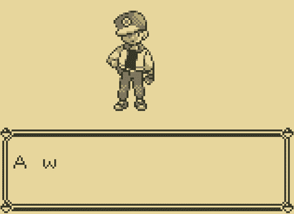

Creating scrolling text in Unity
In this article, I will explain how to create scrolling text in Unity, with an alterable scrolling speed. I am refering to this:

I am going to detail how to create a function that takes a string as a parameter, and display that string in a scrolling fashion. It should be easy to adapt this function for whatever you want to do. I’m also going to pass a float as a parameter that will define the scrolling speed, though I would recommend creating an enum for that. For example, this is what I did for a personnal project:
|
|
How to do it
I begin by creating the signature of this function:
|
|
The numberOfFramesBetweenLetters value represents the number of frames elapsed between each letter. You may have noticed that I created a coroutine. This is only an implementation choice, and it should be easy to adapt the code for a normal function. You may also have noticed I used a float instead of an int for the number of frames between letters. I will explain why a bit latter.
The first step is to loop over the text to display:
|
|
For the rest of the tutorial, I will assume dialogueBox refers to a Unity Text component. I will want to manipulate dialogueBox.text to display the scrolling text.
To wait for a number of frames, I yield WaitForFixedUpdate as many time as necessary by using a loop:
|
|
I use WaitForFixedUpdate instead of WaitForUpdate to make sure the text is displayed at a constant speed.
This function should work, but only up to a specific speed. Indeed, you cannot update the screen more than once every frame! To achieve a speed higher than “one letter displayed every frame”, we are going to display more than one letter at once.
Note that than I say “frame”, I’m actually refering to Unity fixed frametate (since I use the
WaitForFixedUpdatefunction), which occurs by default every 0.02 second. You can change this value by going to Edit → Project Settings → Time.
Let us add the value numberOfLettersToDisplayAtOnce in our function. You only want to use it if the value of numberOfFramesBetweenLetters is inferior to 1.0f (and that is why I used a float and not an int). For example, if numberOfFramesBetweenLetters is equal to 0.5f, we are going to display two letters at once.
More generaly, numberOfLettersToDisplayAtOnce is equal to 1.0f / numberOfFramesBetweenLetters.
|
|
This is almost over, we only need to effectively display more than one letter at once by adding another loop:
|
|
There are two little tricks: the first one is the if (i < charArray.Length) part. It is used to make sure that you’re not trying to display more letters at once than there is letters left in the text (think about what happen if you try to display a five letters text two letters by two letters).
The second one is the Mathf.Max(numberOfFramesBetweenLetters, 1.0f). We need to use this to make sure the loop works in the case where numberOfFramesBetweenLetters < 1.0f.
And finaly, here’s an example of how this could look in game:
This “simple” effect took me more time to figure out thant I am willing to admit, so I hope it can save you some time. On the other hand, I acknowledge this method is not always very elegant. If you do find a better solution, please let me know!